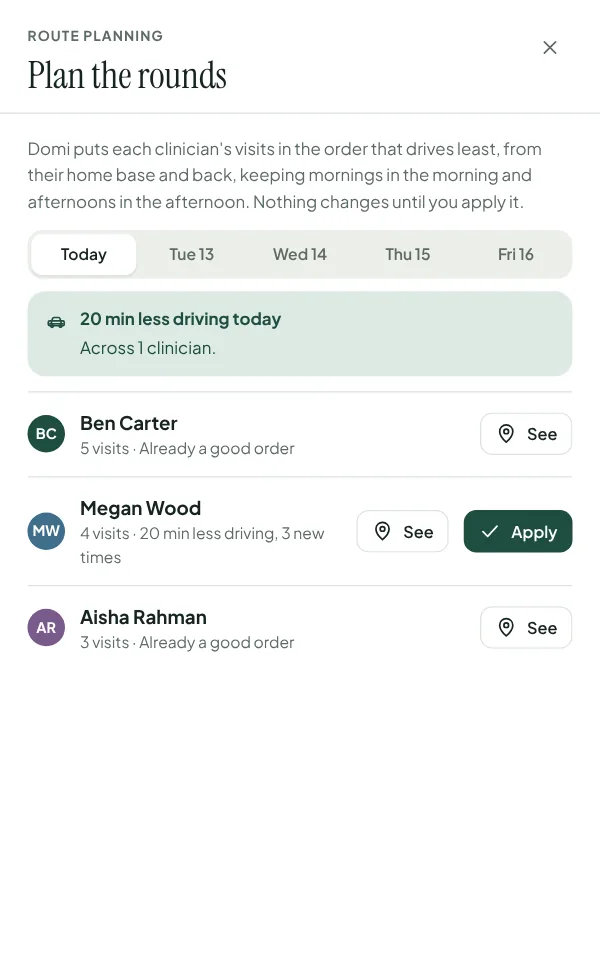
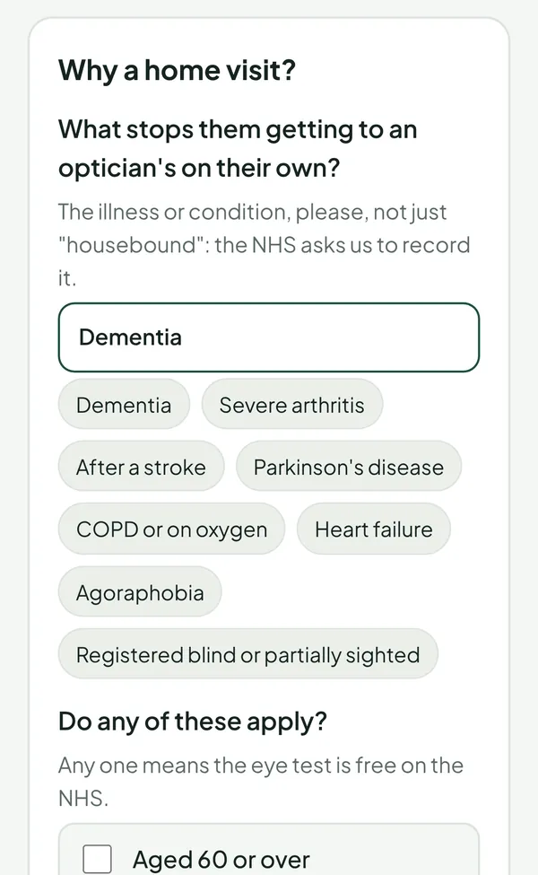

Fills the diary
- Refill by text, best match first
- A CANCEL reply refills the slot
- Call list for non-texters
- Reminders and confirmations
- Automatic recall texts
- Facebook leads straight in
- Referral form
- Self-booking by drive time
Domi is the diary for healthcare that comes to the patient’s home: eye care, hearing, foot care, dental, physio and nursing. When a patient cancels, it texts the best-matched person on your waiting list, books the first yes, and plans each clinician’s route.


PCSE notice rules checked at booking, eye tests only offered to optometrists, and glasses deliveries filling same-day gaps. Domi for domiciliary opticians →
Hearing tests, fittings, wax removal and aid reviews as visit types, with cancellations refilled and routes planned. Domi for audiology →
Nail-care rounds fill whole days, so a cancellation is lost income and a lost slot. Domi refills it and keeps the round tight. Domi for podiatry and foot care →
Visits to homes and care homes, with carers, access and capacity noted on the record, and each day's route planned for the least driving. Domi for dental care →
Short-notice patients slot straight into cancelled visits, and the referral form takes discharges from family or ward staff. Domi for physiotherapy →
Fasting patients marked mornings-only stay in the morning when routes are planned, and anyone who can't be texted is phoned.
Visit notes on the phone even without signal, the day's route on a street map, and every record anyone opens logged.
Referrals from families, GPs and social workers through one form, then assessments booked by drive time across the patch.




Each enquiry sorted by its answers, with the right reply sent straight away.
Makes your CC1 to CC3 calls and logs each answer. Only for patients who agree, and never clinical advice.
The eye exam on the tablet and GOS claims, GOS6 included, sent to PCSE. One system instead of two.
£160a month
Each: £24.13 sight test + £40.80 home-visit supplement (NHS England, 2025/26).
Your spreadsheet, a practice-system export or the paper diary. Column headings first, so we can plan the move before any patient data changes hands.
The import flags postcodes that are really town names, duplicates, patients with only a landline and missing details, so nothing goes in wrong.
Your visit types, the towns you cover, your team and their working hours, and your logo on everything patients see.
Your team runs real days alongside the old way until they're happy. Most practices are live in about four weeks.
Any healthcare service that visits patients at home or in care homes: eye care, hearing, foot care, dental, physiotherapy, blood tests, nursing and therapy assessments. Domiciliary eye care has its rules built in today, including PCSE's notice period for NHS sight tests. For the others, the parts every home-visit service needs work now, and your visit types and records are set up with you.
The demo is set up as an eye-care practice, but most of what you'll see isn't specific to eyes: the waiting list, refilling cancellations by text, route planning, the referral form, the phone app and sign-in. Tell us how your visits work and we'll show you what's ready and what we'd set up, and be straight about anything that isn't built yet.
Not yet. For hearing practices, a Noah 4 integration needs a partnership with HIMSA, who make Noah. It's outside our control, so we won't give you a date we can't keep.
Not today. Domi runs the admin around your visits: the diary, refills, routes, referrals and recalls. Clinical records, such as the eye examination or an audiogram, stay in the clinical system you already use, and Domi works alongside it. For eye care, we plan to bring the examination and NHS claims into Domi so one system can do both, once PCSE approves Domi as a connected system. For Opticabase users, patients import straight in, and Domi keeps a list of diary changes to copy back.
An NHS sight test at home needs a notification to PCSE in time: at least 48 hours ahead for one or two patients at an address, 3 weeks for three or more, and no more than 8 weeks ahead. Domi checks this when you book and won’t offer a time that can’t be notified, unless you record that the ICB has approved it. A gap today goes to someone waiting for a glasses delivery, a repair or a private visit instead. When an NHS test is booked or cancelled, Domi adds it to a list of notifications to lodge or cancel, with the deadline and the form details ready to copy. You still lodge them in PCSE Online yourself: sending them from Domi needs PCSE to accept Domi as a connected system, and we won’t give you a date we can’t keep.
Our first five practices pay a founding price of £160 a month for up to 3 clinicians, then £45 a month for each clinician beyond that. It includes 1,500 patient texts a month, hosting in London, support and updates, and is fixed for the first year, then reviewed once a year by no more than 5%. A one-off set-up fee covers importing your patients and setting Domi up for your service; we quote it in writing before you commit.
Yes. Domi runs in the web browser, so there’s nothing to install. The office screen fits a laptop or a tablet, and the clinician app works on any phone, or on a tablet if a clinician prefers a bigger screen.
No. Patients deal with text messages and, if they want to book themselves, a simple web page with large text and one question at a time.
Each offer has a reply window that fits how soon the visit is. When it closes, the next people are asked automatically. If there’s no longer time for anyone to get ready, the slot is left open rather than offered to someone who can’t make it.
The office can see every signed-in device and sign the lost phone out remotely. Signing out wipes the round and records the phone was keeping for working offline.
It’s held in London and encrypted. Every user signs in with a password and a code from their phone, sees only what their job needs, and every record viewed or changed is logged. Backups run daily and we test restoring them. The full detail, including what each supplier sees, is on our security page.
You get a full export of your practice’s data within 14 days, then we delete it, backups included, within 30 days and confirm it in writing. That’s written into the data processing agreement, so it holds whatever the reason. Before then, you can export reports, visits, sales and invoices as spreadsheets at any time.
Domi is made by YSB Ventures Ltd, a small UK company. You deal directly with the person who builds it, so a request doesn’t sit in a support queue. We’ll tell you plainly what’s built, what isn’t, and what we can’t promise.
The software is. The patients, clinicians and texts are invented, and the demo resets itself. Every visitor gets their own private copy, so you can cancel, book and break things freely.
No questions match that. Try another word, or email us below.